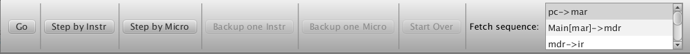

Debug mode provides you with several tools for finding bugs in your code, including the following:
To enter debug mode, select the "Debug Mode" menu item in the Execute menu. This action will cause a debug toolbar to appear below the main menu (see Figure 1).

Figure 1. The debugging toolbar
The label to the left of the scroll box on the right end of the toolbar always displays the machine instruction or fetch sequence that is about to be or is currently being executed. In Figure 1 above, the fetch sequence is about to be executed. At the start of each machine cycle, the toolbar displays the fetch sequence first. The scroll box lists the microinstructions comprising the current machine instruction or fetch sequence. The microinstruction that is to be executed next is always highlighted.
Go
The "Go" button causes execution to continue without interruption until one of the following happens:
Step by Instr
The "Step by Instr" button causes the execution of one full machine cycle (a fetch sequence followed by the execute sequence of the instruction decoded by the fetch sequence). If part of a machine cycle has already been executed (for example, by means of the "Step by Micro" button or if the execution of a whole cycle was halted because of an error), then clicking this button causes the rest of that machine cycle to be executed. The name of the machine instruction currently being executed is displayed in the label to the scroll box at the right end of the toolbar.
Step by Micro
The "Step by Micro" button causes execution of one microinstruction in the current fetch or execute sequence. The name of the microinstruction to be executed is highlighted in the scroll box on the right end of the debug toolbar. After execution of the microinstruction, any values in registers that were changed by it are highlighted with a green border.
Backup one Instr
The "Backup one Instr" button causes the machine to back up to the state it was in at the beginning of the last machine cycle. You can continue backing up one machine instruction at a time all the way to the initial state of the machine when you entered debug mode.
Backup one Micro
The "Backup one Micro" button causes the machine to back up to the state it was in at the beginning of the previous microinstruction. You can continue backing up one microinstruction at a time all the way to the initial state of the machine. If you have been backing up by microinstruction and then use the "Backup one Instr" button, the machine will back up to the state it was in at the beginning of the last machine cycle.
Start over
The "Start over" button causes the machine to back up all at once to the initial state it was in when the user started executing the current program in debug mode. This action also causes the IO to be flushed and reset and the control unit to be reset to begin execution again at the start of the fetch sequence. This button functions similarly to "Reset everything" in the Execute menu except that this button does not clear the registers and RAMs (unless they were clear when debug mode was entered).
Keyboard Shortcuts for buttons in the debug toolbar
The six buttons in the debug toolbar have keyboard shortcuts you can use. Here is a list of them. Replace the Control key with the Command key on Macintosh computers.
Button Shortcut Go Ctrl-Alt-G Step by Instr Ctrl-Alt-I Step by Micro Ctrl-Alt-M Backup one Instr Ctrl-Alt-B Backup one Micro Ctrl-Alt-K Start Over Ctrl-Alt-S
These keyboard shortcuts cannot be changed in the Preferences dialog like other keyboard shortcuts can.
Setting Break points in the program
The grey column that appears along the left edge in the text editor is used for setting break points in your program. To set a break point, click in the grey column and a red dot will appear there. To clear a break point, just click on the red circle. CPU Sim will halt execution whenever it reaches an instruction that has a break point set. More precisely, at the beginning of each machine cycle, CPU Sim looks at the value in the program counter register (specified in the Options dialog). It treats that value as an address into the code store. It then checks the code store to see whether the instruction at that address corresponds to a line of assembly code with a break point set. If so, it halts. At that point, you can inspect and/or change the contents of any register or RAM and continue execution or back up. Note that break points work only when CPU Sim is in debug mode.
Notes